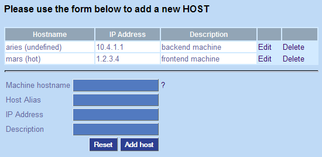

| All machines, or hosts, that run the ispman-agent need to be listed
in the hosts. Once the host is created, it can be attached to the right
hostgroups.
|
To add a Host
- Click Configuration, and click Hosts.
- Machine Hostname - Enter the fully qualified
hostname
- Host Alias - a short name for the host
- IP Address - IP Address in dotted quad format.
- Description - Brief description of the machine, such as virtualhost #1
- Click Add host when finished.
|
Once all hosts are entered proceed onto host groups.

|
| Return to Configuring ISPMan
|